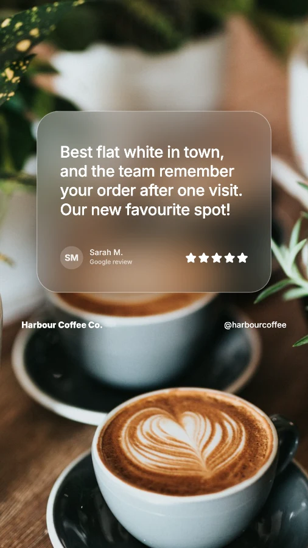
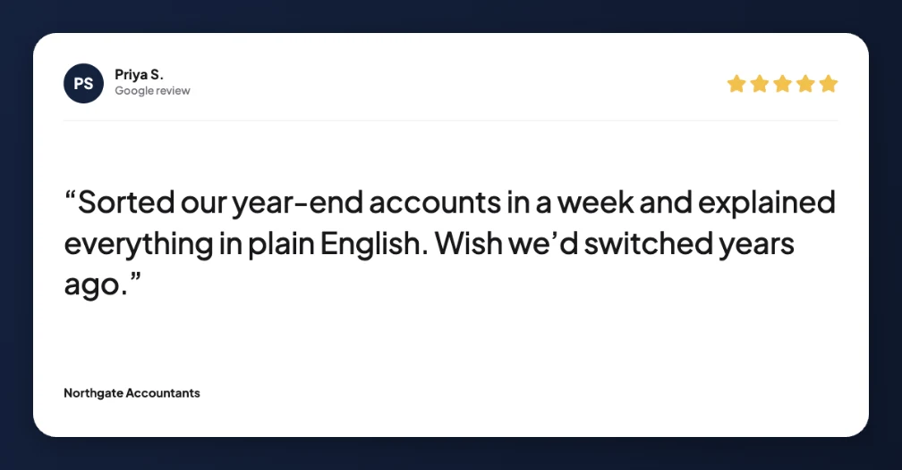

ReviewPost › Guides
How to share customer reviews on social media
Pick a short, specific review, turn it into an image in your brand colours with the star rating and the customer’s first name, and make it in three sizes: 1080×1080 for feed posts, 1080×1920 for Stories and Reels, and 1200×627 for LinkedIn. Post about once a week, thank the customer in the caption, and keep your best ones in an Instagram Highlight.
Your reviews are already written. They’re specific, they’re in your customers’ own words, and they answer the questions new customers have. They just sit on Google or Trustpilot, where only people already looking for you see them. Sharing them on social media puts that proof in front of everyone else.
Platform guides
Image sizes for every platform
| Platform | Size (pixels) | Notes |
|---|---|---|
| Instagram feed post | 1080 × 1080 | Square. 1080 × 1350 portrait also works. |
| Instagram Story or Reel | 1080 × 1920 | Keep text out of the top 14% and bottom 35%. |
| Facebook feed post | 1080 × 1080 | Same image as Instagram. |
| Facebook Story | 1080 × 1920 | Same image as Instagram Stories. |
| LinkedIn post | 1200 × 627 | Shows in full on desktop and mobile. |
| TikTok or WhatsApp Status | 1080 × 1920 | Same tall image. |
In practice, three images cover everything: square, tall and wide. Make all three from each review and you can post it everywhere in a few minutes.


One review, three shapes: Story, feed post and LinkedIn.
Which platform suits your business?
- Cafés, salons, shops and other local businesses: Instagram and Facebook feed posts, plus Stories for your followers. Reels help new local people find you.
- Trades and home services: Facebook is often where local recommendations happen, and reviews that mention reliability and fair prices work best.
- Accountants, consultants, agencies and B2B services: LinkedIn, with reviews that mention a result, like time saved or a problem solved.
Choosing which reviews to share
- Specific beats generic. “Fixed our boiler the same day” is more convincing than “Great service!”.
- Answer a worry. Price, waiting times, parking, being nervous, hidden costs.
- Short reads better. Under 30 words, or use the best sentence as a headline.
- Mix it up. Different customers, different services, different reasons people love you.
How often to post
About once a week on Instagram and Facebook, and once or twice a month on LinkedIn. Share every new review post to your Story, and keep the best in a “Reviews” Highlight so they don’t disappear.
Keep it honest
Only share genuine reviews and keep the meaning of what the customer said. UK consumer law bans fake reviews and misleading edits to real ones. Use first name and initial for privacy, and only tag customers who are happy to be tagged.
Common questions
Can businesses share their Google reviews on social media?
Yes. Google reviews are public, and sharing them is a common way to show social proof. Keep the customer’s meaning, credit them by first name and initial, and only share genuine reviews.
What image sizes do I need to share reviews on social media?
Three sizes cover almost everything: 1080×1080 for Instagram and Facebook feed posts, 1080×1920 for Stories, Reels and TikTok, and 1200×627 for LinkedIn and Facebook link-style posts.
Which platform is best for sharing customer reviews?
It depends on your customers. Instagram and Facebook suit local and consumer businesses, LinkedIn suits services sold to other businesses, and Reels are the best way to reach people who don’t follow you yet. Most businesses post one review in all three sizes.
How often should I post customer reviews?
About once a week on Instagram and Facebook, and once or twice a month on LinkedIn. Mix reviews with your other content so your feed doesn’t become a wall of testimonials.
All three sizes from one review, in one click
ReviewPost is a free Chrome extension that turns Google and Trustpilot reviews into branded posts. No account needed.
Add ReviewPost to Chrome